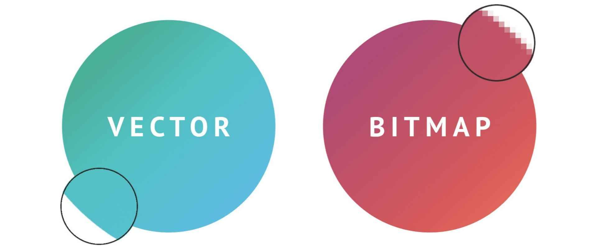

Bitmap en Vectorafbeeldingen
Bitmap- en Vectorafbeeldingen
Bitmapafbeeldingen (Rasterafbeeldingen):
- Definitie: Bitmapafbeeldingen, ook wel rasterafbeeldingen genoemd, zijn afbeeldingen die zijn opgebouwd uit een rooster van kleine gekleurde pixels. Elk pixel bevat specifieke kleurinformatie, waardoor een samenhangende afbeelding ontstaat.
- Bestandsformaten: Bitmapafbeeldingen worden meestal opgeslagen in bestandsindelingen zoals JPEG, PNG, GIF, BMP en TIFF.
- Resolutie: Bitmapafbeeldingen hebben een vaste resolutie, wat betekent dat ze uit een specifiek aantal pixels bestaan.
- Toepassingen: Bitmapafbeeldingen worden vaak gebruikt voor foto's, afbeeldingen met veel details en complexe kleurverlopen.
- Bewerking: Bewerking van bitmapafbeeldingen gebeurt pixel per pixel.
- Voorbeelden: Foto's, illustraties, digitale schilderijen en iconen zijn voorbeelden van bitmapafbeeldingen.

Vectorafbeeldingen:
- Definitie: Vectorafbeeldingen zijn opgebouwd uit wiskundige paden en vormen in plaats van pixels.
- Bestandsformaten: Populaire vectorindelingen zijn SVG, AI, EPS en PDF.
- Resolutie: Vectorafbeeldingen hebben geen vaste resolutie en zijn schaalbaar zonder kwaliteitsverlies.
- Toepassingen: Vectorafbeeldingen zijn ideaal voor logo's, iconen, grafieken, diagrammen en illustraties.
- Bewerking: Vectorafbeeldingen worden bewerkt met behulp van vectorgrafische software.
- Voordelen: Het belangrijkste voordeel van vectorafbeeldingen is hun schaalbaarheid en resolutie-onafhankelijkheid.